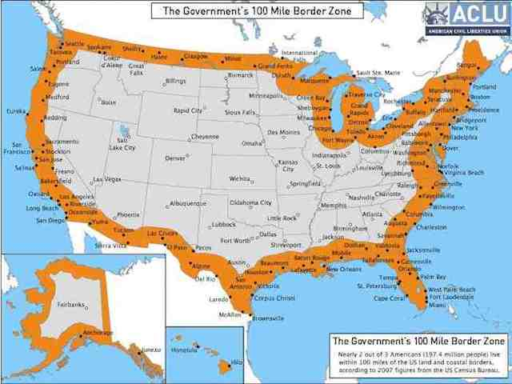
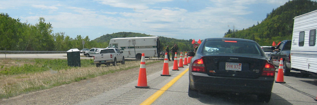

2018-01-19 08:00
The right of the people to be secure in their persons, houses, papers, and effects, against unreasonable searches and seizures, shall not be violated, and no warrants shall issue, but upon probable cause, supported by oath or affirmation, and particularly describing the place to be searched, and the persons or things to be seized.
— The Fourth Amendment
Democrats have their Munsingwear all in a knot about Donald Trump’s authoritarian playbook — his attacks on a free press, directing Jeff Sessions to act as his personal lawyer, the firing of Jonathan Comey, and the possibility he may do the same with Robert Mueller.
But recently, when it came time to walk the walk for Democracy instead of just talk the talk, it turned out that Democrats were mostly talk. Sixty-five Democratic U.S. Representatives and twenty-one Democratic Senators handed Trump and the Republican Party an easy victory by extending warrantless spying on Americans. It was a needless and spineless capitulation by Democratic Party centrists, but it was also nothing new from a party that traditionally votes like Republicans on military and security issues. Dammit, Democrats!
Section 702 of the FISA Amendments Act extends and expands the ability of spy agencies to monitor your digital communications without a warrant. With Edward Snowden’s 2013 revelation, the public now knows that Section 702 has been used illegally. Millions of communications are vacuumed up and stored annually. The hundreds of thousands of foreign targets have never been approved individually by a court but are essentially retroactive dragnets that frequently involve wiretapping American citizens. This could have been fixed because even Tea Party Republicans wanted the change.
But on January 11th sixty-five House Democrats — including Massachusetts stealth Republicans Bill Keating and Seth Moulton — voted “Yea” on the bill. They were the “usual suspects”: Aguilar (CA), Bera (CA), Bishop (GA), Blunt Rochester (DE), Boyle (PA), Brown (MD), Brownley (CA), Bustos (IL), Carson (IN), Cartwright (PA), Castor (FL), Clyburn (SC), Cooper (TN), Costa (CA), Crist (FL), Cuellar (TX), Delaney (MD), Demings (FL), Deutch (FL), Foster (IL), Frankel (FL), Garamendi (CA), Gottheimer (NJ), Grisham (NM), Higgins (NY), Himes (CT), Hoyer (MD), Keating (MA), Krishnamoorthi (IL), Kuster (NH), Langevin (RI), Lawson (FL), Lipinski (IL), Loebsack (IA), Lowey (NY), Maloney (NY), McEachin (VA), Meeks (NY), Moulton (MA), Murphy (FL), Norcross (NJ), O’Halleran (AZ), Panetta (CA), Pelosi (CA), Perlmutter (CO), Peters (CA), Peterson (MN), Quigley (IL), Rice (NY), Rosen (NV), Ruiz (CA), Ruppersberger (MD), Schiff (CA), Schneider (IL), Scott (GA), Sewell (AL), Sinema (AZ), Sires (NJ), Slaughter (NY), Suozzi (NY), Swalwell (CA), Thompson (CA), Torres (CA), Veasey (TX), and Wasserman-Schultz (FL).
On January 18th twenty-one Senate Democrats voted “Yea” on the Senate version: Carper (DE), Casey (PA), Cortez Masto (NV), Donnelly (IN), Duckworth (IL), Feinstein (CA), Hassan (NH), Heitkamp (ND), Jones (AL), Kaine (VA), Klobuchar (MN), Manchin (WV), McCaskill (MO), Nelson (FL), Peters (MI), Reed (RI), Schumer (NY), Shaheen (NH), Stabenow (MI), Warner (VA), and Whitehouse (RI).
Both members of the Democratic leadership and the former head of the Democratic Party all approved the blanket surveillance. And New Guy Doug Jones. No doubt it’s a good thing the new Alabama Senator is on the job instead of an alleged pedophile. But Jones, who was supported by Democrats of all flavors — I even sent him $50 — just voted away the privacy of 330 million Americans in one of his first official acts. This was not exactly what I was hoping for.
So, while the president bribes porn stars and deals with Russian mafiosi, re-tweets fascists and spits out racist invective, we’re ignoring Congressional and Senate abuses by both parties — one of the worst the dismantling of our democracy.

When I was a boy one of the great crimes of the Soviet Union and Germany of then-recent memory was the practice of arbitrary stops and requiring the papers of citizens: “Papiere!” some thug would demand. Nothing like that could ever happen in the USA — or so we thought. But with the so-called “border exception” to the Fourth Amendment — sometimes known as the Constitution-free zone — The U.S. has snuggled up closer to authoritarian rule. Citizens in Arizona are now accustomed to being stopped by border agents demanding: “Papiere!” But now “Papiere!” has come to New England.
If some day you happen to be driving up to New Hampshire you just might run into the Customs and Border Protection service. Last Fall the New Hampshire Union Leader reported roadblocks on I-93 near Thornton, during which travelers were stopped, asked about their citizenship, and sometimes hauled off to unknown detention centers. In addition, drug-sniffing dogs netted arrests for marijuana, cocaine, and other drugs. All without a warrant.

Likewise, the growing practice of demanding access to a traveler’s computer equipment is also a new feature of our gradual abandonment of the Fourth Amendment. The CATO Institute notes: “thanks to the ‘border exception’ to the Fourth Amendment, Customs and Border Protection (CBP) officers do not need reasonable suspicion or probable cause to search electronic devices at airports.” The Customs and Border Protection service reports that last year over 30,000 travelers had to fork over laptops, tablets, cellphones, and the passwords to everything in them. As the same statistics show, this practice was in full swing during the Obama administration.
At a time of daily revelations of corruption, incompetence and venality by a sitting president, the bar is admittedly pretty low for the rest of the political establishment. But it’s still worth prodding them to live up to expectations. I’m going to call both my U.S. Senators and thank them for opposing the FISA extension.
And then I’m going to have a long, loud conversation with one of Bill Keating’s staffers.